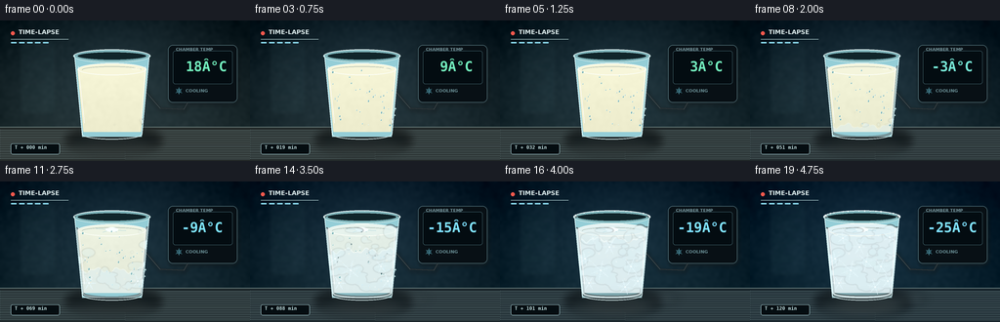
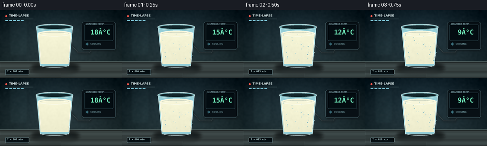
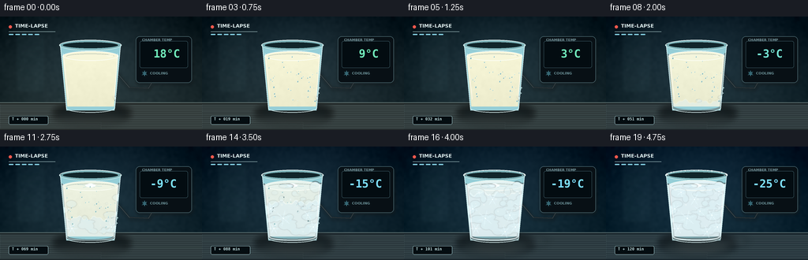
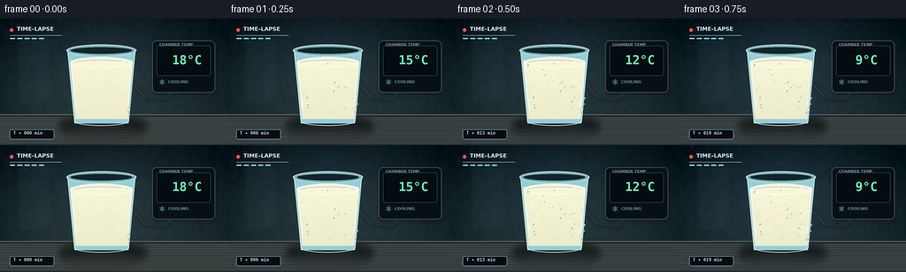

CODING AGENTS AS PIXEL WORLD MODELS
traex/GPT-5.6-Sol · phygen_093
点击播放 · 原生 RGB 像素
逐轮保存的候选
回放视频、检查图与代码变化。
每份候选均可单独播放。实际图片检查记录在下方工具轨迹中。
候选 01播放与检查图
点击播放 · 原生 RGB 像素


展开代码变化
--- 上一保存版本
+++ 本次保存版本
@@ -0,0 +1,306 @@
+from pathlib import Path
+import math
+import numpy as np
+from PIL import Image, ImageDraw, ImageFont, ImageFilter
+import cv2
+import artifact_io
+
+# PixelWorld case: deterministic, text-only procedural render.
+CASE_DIR = Path(__file__).resolve().parent
+W, H, N = 256, 144, 20
+S = 4
+RW, RH = W*S, H*S
+rng = np.random.default_rng(9301)
+
+
+def q(v):
+ return int(round(v*S))
+
+def pts(seq):
+ return [(q(x), q(y)) for x, y in seq]
+
+def box(x0,y0,x1,y1):
+ return (q(x0),q(y0),q(x1),q(y1))
+
+def mix(a,b,t):
+ return tuple(int(a[i]*(1-t)+b[i]*t) for i in range(len(a)))
+
+def smooth(t):
+ t=max(0.0,min(1.0,t)); return t*t*(3-2*t)
+
+def font(size, bold=False, mono=False):
+ if mono:
+ p = '/usr/share/fonts/truetype/dejavu/DejaVuSansMono-Bold.ttf'
+ elif bold:
+ p = '/usr/share/fonts/truetype/dejavu/DejaVuSans-Bold.ttf'
+ else:
+ p = '/usr/share/fonts/truetype/dejavu/DejaVuSans.ttf'
+ return ImageFont.truetype(p, q(size))
+
+# Fixed microscopic texture and frost sites prevent distracting random flicker.
+base_noise = rng.normal(0, 1, (RH, RW)).astype(np.float32)
+base_noise = cv2.GaussianBlur(base_noise, (0,0), 1.6*S)
+base_noise /= max(base_noise.std(), 1e-6)
+condensation = [(float(rng.uniform(83,149)), float(rng.uniform(50,109)),
+ float(rng.uniform(.45,1.15)), float(rng.uniform(0,1))) for _ in range(42)]
+frost_blobs = [(float(rng.uniform(82,151)), float(rng.uniform(49,116)),
+ float(rng.uniform(3,10)), float(rng.uniform(2,7)), float(rng.uniform(.04,.88))) for _ in range(47)]
+crystals = [(91,104,.12,7),(141,102,.20,8),(87,79,.31,7),(147,76,.39,8),
+ (103,91,.47,10),(134,87,.54,9),(112,67,.62,8),(128,108,.68,8),
+ (95,58,.74,6),(143,57,.79,7),(119,82,.83,11)]
+
+def crystal(draw, cx, cy, radius, alpha, angle=0):
+ """Sixfold ice dendrite with small symmetric side branches."""
+ col = (232,250,255,alpha)
+ thin = max(1,q(.42)); branch_w=max(1,q(.30))
+ for k in range(6):
+ a = angle + k*math.pi/3
+ ux,uy=math.cos(a),math.sin(a)
+ ex,ey=cx+radius*ux,cy+radius*uy
+ draw.line(pts([(cx,cy),(ex,ey)]), fill=col, width=thin)
+ for frac in (.50,.72):
+ bx,by=cx+radius*frac*ux,cy+radius*frac*uy
+ for sign in (-1,1):
+ aa=a + sign*2.32
+ ln=radius*.22
+ draw.line(pts([(bx,by),(bx+ln*math.cos(aa),by+ln*math.sin(aa))]),
+ fill=col,width=branch_w)
+ draw.ellipse(box(cx-.8,cy-.8,cx+.8,cy+.8),fill=(248,255,255,min(255,alpha+25)))
+
+def render(i):
+ t = i/(N-1)
+ freeze = smooth((t-.28)/.72)
+ deep = smooth((t-.52)/.48)
+ # A subtly cooling, locked-off dark cold-chamber background.
+ yy,xx=np.mgrid[0:RH,0:RW]
+ y=yy/S; x=xx/S
+ top=np.array(mix((19,31,36),(10,28,43),t),dtype=np.float32)
+ bot=np.array(mix((42,56,58),(19,43,55),t),dtype=np.float32)
+ frac=(y/H)[...,None]
+ arr=top*(1-frac)+bot*frac
+ # Cold light behind the subject and controlled vignette.
+ glow=np.exp(-(((x-114)/90)**2+((y-52)/72)**2))*18
+ vign=np.clip(((x-128)/150)**2+((y-72)/105)**2,0,1)*18
+ arr += glow[...,None]*np.array([.42,.74,.88])[None,None,:]
+ arr -= vign[...,None]
+ arr += base_noise[...,None]*1.15
+ arr=np.clip(arr,0,255).astype(np.uint8)
+ im=Image.fromarray(arr,'RGB').convert('RGBA')
+ d=ImageDraw.Draw(im,'RGBA')
+
+ # Soft vertical cold-room panel, deliberately out of focus.
+ panel=Image.new('RGBA',(RW,RH),(0,0,0,0)); pd=ImageDraw.Draw(panel,'RGBA')
+ pd.rounded_rectangle(box(20,20,57,96),radius=q(4),fill=(102,151,158,14),outline=(172,215,220,18),width=q(.6))
+ for py in (31,47,63,79):
+ pd.line(pts([(27,py),(50,py)]),fill=(190,224,222,14),width=q(.6))
+ panel=panel.filter(ImageFilter.GaussianBlur(q(2.0))); im.alpha_composite(panel)
+ d=ImageDraw.Draw(im,'RGBA')
+
+ # Counter and its cool reflective band.
+ d.rectangle(box(0,109,256,144),fill=mix((38,44,43,255),(26,39,46,255),t))
+ d.line(pts([(0,109),(256,109)]),fill=(142,165,161,78),width=q(.55))
+ # Brushed-metal grain.
+ for k in range(18):
+ yy0=112+k*1.72
+ shade=19+(k%4)*5
+ d.line(pts([(0,yy0),(256,yy0+.4)]),fill=(155,186,187,shade),width=q(.4))
+ # Reflection under glass.
+ refl=Image.new('RGBA',(RW,RH),(0,0,0,0)); rd=ImageDraw.Draw(refl,'RGBA')
+ rd.ellipse(box(70,115,161,137),fill=(178,212,215,25+int(18*deep)))
+ rd.ellipse(box(87,118,149,132),fill=(229,241,234,34+int(22*deep)))
+ refl=refl.filter(ImageFilter.GaussianBlur(q(5))); im.alpha_composite(refl)
+ d=ImageDraw.Draw(im,'RGBA')
+
+ # Interface overlay: makes timelapse and temperature change explicit.
+ d.ellipse(box(11,11,15,15),fill=(241,88,77,215))
+ d.text((q(19),q(8.1)),"TIME-LAPSE",font=font(6.2,bold=True),fill=(224,239,239,205),stroke_width=0)
+ d.line(pts([(11,19),(70,19)]),fill=(187,218,219,42),width=q(.4))
+ for m in range(5):
+ active = t >= m/5
+ d.rounded_rectangle(box(11+m*8.2,22,17+m*8.2,23.3),radius=q(.6),
+ fill=(139,217,236,195 if active else 42))
+
+ # Temperature logger behind the glass.
+ device=Image.new('RGBA',(RW,RH),(0,0,0,0)); dd=ImageDraw.Draw(device,'RGBA')
+ dd.rounded_rectangle(box(172,25,243,84),radius=q(5),fill=(8,16,21,246),outline=(105,142,150,150),width=q(.8))
+ dd.rounded_rectangle(box(177,31,238,65),radius=q(2.5),fill=(3,12,17,255),outline=(76,114,124,180),width=q(.6))
+ dd.text((q(180),q(27.0)),"CHAMBER TEMP",font=font(4.3,bold=True),fill=(136,170,177,205))
+ temperatures=[18,15,12,9,6,3,1,-1,-3,-5,-7,-9,-11,-13,-15,-17,-19,-21,-23,-25]
+ tv=temperatures[i]
+ txt=f"{tv:+d}°C" if tv<0 else f" {tv:d}°C"
+ # Digits go cyan at subzero, warmer green initially.
+ dig=mix((113,237,188,255),(126,224,255,255),smooth((t-.25)/.4))
+ fnt=font(14.1,mono=True)
+ bb=dd.textbbox((0,0),txt,font=fnt)
+ dd.text((q(207)-(bb[2]-bb[0])//2,q(39.0)),txt,font=fnt,fill=dig)
+ # Snowflake / cooling status icon.
+ dd.ellipse(box(181,70,185,74),outline=(116,221,244,170),width=q(.6))
+ dd.line(pts([(183,68.5),(183,75.5)]),fill=(116,221,244,160),width=q(.5))
+ dd.line(pts([(180,70),(186,74)]),fill=(116,221,244,160),width=q(.5))
+ dd.line(pts([(180,74),(186,70)]),fill=(116,221,244,160),width=q(.5))
+ dd.text((q(190),q(69.2)),"COOLING",font=font(4.4,bold=True),fill=(134,180,187,175))
+ # Fine cable and immersed probe (behind glass).
+ dd.line(pts([(192,84),(188,91),(164,90),(139,61)]),fill=(28,35,38,255),width=q(1.5))
+ dd.line(pts([(192,84),(188,91),(164,90),(139,61)]),fill=(125,145,148,120),width=q(.45))
+ dd.rounded_rectangle(box(137.4,48,140.6,72),radius=q(1.3),fill=(119,139,141,230),outline=(216,229,225,115),width=q(.45))
+ # tiny cast shadow
+ sh=device.filter(ImageFilter.GaussianBlur(q(2))); im.alpha_composite(sh,(q(1),q(2)))
+ im.alpha_composite(device)
+ d=ImageDraw.Draw(im,'RGBA')
+
+ # Glass cast shadow.
+ shadow=Image.new('RGBA',(RW,RH),(0,0,0,0)); sd=ImageDraw.Draw(shadow,'RGBA')
+ sd.ellipse(box(69,113,164,131),fill=(0,7,10,125))
+ shadow=shadow.filter(ImageFilter.GaussianBlur(q(4))); im.alpha_composite(shadow)
+
+ # Rear glass silhouette and tint.
+ d.polygon(pts([(76,35),(153,35),(145,119),(84,119)]),fill=(149,206,215,13),outline=(188,231,235,54))
+ # Rear rim.
+ d.ellipse(box(75,29.5,154,43),fill=(125,179,185,18),outline=(208,239,239,118),width=q(.8))
+ d.ellipse(box(79,32,150,40.5),fill=(16,37,42,90),outline=(139,190,195,74),width=q(.6))
+
+ # Milk volume mask (front body and upper ellipse).
+ milk_mask=Image.new('L',(RW,RH),0); md=ImageDraw.Draw(milk_mask)
+ md.polygon(pts([(79.3,50),(149.7,50),(144.3,114),(85.2,114)]),fill=245)
+ md.ellipse(box(79.2,43.7,150,56.4),fill=255)
+ # Creamy liquid cools toward a blue-white frozen solid.
+ liquid=np.zeros((RH,RW,4),dtype=np.uint8)
+ warm=np.array(mix((239,238,207),(216,231,234),freeze),dtype=float)
+ depth=((yy/S)-46)/70
+ lum=np.clip(8-10*depth, -5, 9)[...,None]
+ tex=(base_noise*.95)[...,None]
+ liquid[...,:3]=np.clip(warm+lum+tex,0,255)
+ liquid[...,3]=np.asarray(milk_mask)
+ milk=Image.fromarray(liquid,'RGBA')
+ im.alpha_composite(milk)
+
+ # Freezing front advances upward from the cold glass base with an irregular edge.
+ frozen=Image.new('RGBA',(RW,RH),(0,0,0,0)); fd=ImageDraw.Draw(frozen,'RGBA')
+ if freeze>0:
+ front_y=114-62*freeze
+ wave=[]
+ for sx in np.linspace(83,147,34):
+ sy=front_y + 2.2*math.sin(sx*.29+1.1)+1.2*math.sin(sx*.73)
+ wave.append((sx,sy))
+ poly=wave+[(144,116),(84,116)]
+ fd.polygon(pts(poly),fill=(222,239,243,125+int(65*freeze)))
+ fd.line(pts(wave),fill=(244,253,252,80+int(105*freeze)),width=q(.7+freeze*.8))
+ # cloudy trapped micro-bubbles in the frozen region
+ for n in range(23):
+ px=88+(n*17.31)%54; py=61+(n*23.7)%51
+ if py>front_y+2*math.sin(px*.3):
+ rr=.35+(n%4)*.18
+ fd.ellipse(box(px-rr,py-rr,px+rr,py+rr),fill=(250,255,255,45+int(50*freeze)))
+ frozen.putalpha(Image.fromarray(np.minimum(np.asarray(frozen.getchannel('A')),np.asarray(milk_mask)).astype(np.uint8)))
+ im.alpha_composite(frozen)
+ d=ImageDraw.Draw(im,'RGBA')
+
+ # Top milk surface: liquid meniscus becomes matte, slightly domed ice.
+ surf_col=mix((247,246,218,238),(225,242,246,250),freeze)
+ ytop=43.7-1.0*deep
+ d.ellipse(box(79.5,ytop,149.8,56.0),fill=surf_col,outline=(252,255,248,170),width=q(.7))
+ d.arc(box(84,47,145,54),180,353,fill=(157,174,164,60 if freeze<.4 else 22),width=q(.55))
+ if freeze<.35:
+ # subtle liquid ripple around probe
+ rr=4.2+1.5*math.sin(i*.7)
+ d.ellipse(box(139-rr,49.5-rr*.22,139+rr,49.5+rr*.22),outline=(255,255,239,70),width=q(.4))
+ else:
+ # frozen surface fracture network
+ a=int(70+130*freeze)
+ for ang,ln in [(.2,15),(1.0,10),(2.3,13),(3.4,16),(5.0,11)]:
+ x0,y0=114,49.4; x1=x0+ln*math.cos(ang); y1=y0+ln*.26*math.sin(ang)
+ d.line(pts([(x0,y0),(x1,y1)]),fill=(151,202,214,a),width=q(.45))
+ d.ellipse(box(108,47,121,51.5),fill=(249,255,255,int(28+50*deep)))
+
+ # Condensation beads first, then their bright frozen beads remain under frost.
+ bead_alpha=1-smooth((freeze-.30)/.58)
+ for bx,by,rr,phase in condensation:
+ # droplets become visible as chamber cools; their highlights lock white at freezing.
+ vis=smooth((t-(phase*.10))/0.25)*bead_alpha
+ if vis<=.02: continue
+ d.ellipse(box(bx-rr*.75,by-rr,bx+rr*.75,by+rr),fill=(109,166,172,int(37*vis)),outline=(216,246,244,int(110*vis)),width=max(1,q(.35)))
+ d.ellipse(box(bx-rr*.35,by-rr*.66,bx,by-rr*.28),fill=(255,255,255,int(125*vis)))
+
+ # Exterior rime: patches bloom from base and edges and merge over time.
+ frost=Image.new('RGBA',(RW,RH),(0,0,0,0)); fr=ImageDraw.Draw(frost,'RGBA')
+ for bx,by,rx,ry,threshold in frost_blobs:
+ growth=smooth((freeze-threshold)/.28)
+ # physically favor bottom/side nucleation early
+ edge=min(abs(bx-82),abs(bx-149)); bonus=max(0,(7-edge)/18)+max(0,(by-95)/80)
+ growth=max(growth,smooth((freeze-(threshold-bonus))/.30))
+ if growth<=0: continue
+ fr.ellipse(box(bx-rx*growth,by-ry*growth,bx+rx*growth,by+ry*growth),
+ fill=(215,240,246,int(12+52*growth)))
+ # Strong rime along glass boundaries and foot.
+ if freeze>.08:
+ aa=int(35+135*freeze)
+ fr.line(pts([(78.5,48),(84.6,114)]),fill=(224,248,252,aa),width=q(.7+2.0*freeze))
+ fr.line(pts([(150.5,47),(144.5,114)]),fill=(225,248,253,aa),width=q(.7+1.8*freeze))
+ fr.arc(box(84,108.5,145,120),0,180,fill=(232,251,253,aa),width=q(.8+2*freeze))
+ fr.arc(box(76,29.5,154,43),180,360,fill=(235,253,255,int(45+150*deep)),width=q(.6+1.8*deep))
+ frost=frost.filter(ImageFilter.GaussianBlur(q(.55)))
+ # Clip the frost to the body, except top rim frost remains separately above.
+ bodymask=Image.new('L',(RW,RH),0); bm=ImageDraw.Draw(bodymask)
+ bm.polygon(pts([(76,35),(153,35),(145,120),(84,120)]),fill=255)
+ fa=np.asarray(frost.getchannel('A')); ba=np.asarray(bodymask)
+ frost.putalpha(Image.fromarray(np.minimum(fa,ba).astype(np.uint8)))
+ im.alpha_composite(frost)
+
+ # Geometric sixfold crystals are the key readable low-temperature cue.
+ cry=Image.new('RGBA',(RW,RH),(0,0,0,0)); cd=ImageDraw.Draw(cry,'RGBA')
+ for k,(cx,cy,threshold,rad) in enumerate(crystals):
+ grow=smooth((freeze-threshold)/.23)
+ if grow>0:
+ crystal(cd,cx,cy,rad*grow,int(55+170*grow),angle=.18*k)
+ ca=np.asarray(cry.getchannel('A'))
+ cry.putalpha(Image.fromarray(np.minimum(ca,ba).astype(np.uint8)))
+ im.alpha_composite(cry)
+ d=ImageDraw.Draw(im,'RGBA')
+
+ # Glass edges and specular streaks remain visible through frost.
+ d.line(pts([(76.3,36),(84.2,117)]),fill=(218,246,247,115),width=q(.75))
+ d.line(pts([(152.8,36),(145.2,117)]),fill=(220,246,248,125),width=q(.75))
+ d.line(pts([(80.1,47),(86.2,105)]),fill=(255,255,255,70-int(25*deep)),width=q(.55))
+ d.line(pts([(148.7,47),(144.8,102)]),fill=(255,255,255,46),width=q(.45))
+ d.arc(box(84,111.5,145,121.8),0,180,fill=(227,249,249,120),width=q(.8))
+ d.arc(box(75,29.5,154,43),180,360,fill=(239,253,252,185),width=q(.8))
+ # Rim frost granules after deep freeze.
+ if deep>0:
+ for k in range(22):
+ a=math.pi+(k/21)*math.pi
+ px=114.5+39*math.cos(a); py=36.2+6.3*math.sin(a)
+ rr=(.35+(k%3)*.18)*deep
+ d.ellipse(box(px-rr,py-rr,px+rr,py+rr),fill=(246,255,255,int(190*deep)))
+
+ # Cold mist creeps along the counter late in the sequence.
+ if deep>0:
+ mist=Image.new('RGBA',(RW,RH),(0,0,0,0)); mi=ImageDraw.Draw(mist,'RGBA')
+ for k in range(5):
+ cx=91+k*17+4*math.sin(i*.3+k); cy=119+k%2*3
+ mi.ellipse(box(cx-22,cy-3,cx+22,cy+5),fill=(211,239,246,int((13+5*k)*deep)))
+ mist=mist.filter(ImageFilter.GaussianBlur(q(5))); im.alpha_composite(mist)
+
+ # A small time stamp reinforces accelerated capture without obscuring the scene.
+ d=ImageDraw.Draw(im,'RGBA')
+ mins=int(round(t*120))
+ d.rounded_rectangle(box(11,126,61,137),radius=q(2),fill=(4,13,17,120),outline=(167,207,212,40),width=q(.4))
+ d.text((q(15),q(127.1)),f"T + {mins:03d} min",font=font(5.1,mono=True),fill=(197,225,226,190))
+
+ # Downsample gives antialiased glass, type and crystals.
+ im=im.convert('RGB').resize((W,H),Image.Resampling.LANCZOS)
+ return np.asarray(im,dtype=np.uint8)
+
+
+def main():
+ frames=np.stack([render(i) for i in range(N)],axis=0)
+ artifact_io.save(frames, CASE_DIR)
+ # Also provide a conventional silent RGB video for direct inspection/use.
+ out=cv2.VideoWriter(str(CASE_DIR/'video.mp4'),cv2.VideoWriter_fourcc(*'mp4v'),4.0,(W,H))
+ if out.isOpened():
+ for fr in frames:
+ out.write(cv2.cvtColor(fr,cv2.COLOR_RGB2BGR))
+ out.release()
+ print('saved',frames.shape,frames.dtype,'range',int(frames.min()),int(frames.max()))
+
+if __name__=='__main__':
+ main()
候选 02播放与检查图
点击播放 · 原生 RGB 像素


展开代码变化
--- 上一保存版本
+++ 本次保存版本
@@ -127,7 +127,7 @@
dd.text((q(180),q(27.0)),"CHAMBER TEMP",font=font(4.3,bold=True),fill=(136,170,177,205))
temperatures=[18,15,12,9,6,3,1,-1,-3,-5,-7,-9,-11,-13,-15,-17,-19,-21,-23,-25]
tv=temperatures[i]
- txt=f"{tv:+d}°C" if tv<0 else f" {tv:d}°C"
+ txt=(f"{tv:+d}" if tv<0 else f" {tv:d}") + chr(176) + "C"
# Digits go cyan at subzero, warmer green initially.
dig=mix((113,237,188,255),(126,224,255,255),smooth((t-.25)/.4))
fnt=font(14.1,mono=True)
可观测工具轨迹
实际执行的命令与返回图片。
命令 1exit 0
/bin/bash -lc "cat prompt.txt && printf '\\n--- GENERATION_RULES ---\\n' && cat GENERATION_RULES.md"
命令 2exit 0
/bin/bash -lc "cat task_spec.json && printf '\\n--- FILES ---\\n' && find . -maxdepth 2 -type f -printf '%p\\n' | sort"
命令 3exit 0
/bin/bash -lc "which ffmpeg || true; which python3 || true; python3 - <<'PY' mods=['numpy','PIL','cv2','moviepy','cairo'] for m in mods: try: x=__import__(m); print(m,'OK',getattr(x,'__version__','')) except Exception as e: print(m,'NO',e) PY"
命令 4exit 0
/bin/bash -lc 'cat artifact_io.py'
命令 5exit 0
/bin/bash -lc "cat > generate.py <<'PY'
from pathlib import Path
import math
import numpy as np
from PIL import Image, ImageDraw, ImageFont, ImageFilter
import cv2
import artifact_io
# PixelWorld case: deterministic, text-only procedural render.
CASE_DIR = Path(__file__).resolve().parent
W, H, N = 256, 144, 20
S = 4
RW, RH = W*S, H*S
rng = np.random.default_rng(9301)
def q(v):
return int(round(v*S))
def pts(seq):
return [(q(x), q(y)) for x, y in seq]
def box(x0,y0,x1,y1):
return (q(x0),q(y0),q(x1),q(y1))
def mix(a,b,t):
return tuple(int(a[i]*(1-t)+b[i]*t) for i in range(len(a)))
def smooth(t):
t=max(0.0,min(1.0,t)); return t*t*(3-2*t)
def font(size, bold=False, mono=False):
if mono:
p = '/usr/share/fonts/truetype/dejavu/DejaVuSansMono-Bold.ttf'
elif bold:
p = '/usr/share/fonts/truetype/dejavu/DejaVuSans-Bold.ttf'
else:
p = '/usr/share/fonts/truetype/dejavu/DejaVuSans.ttf'
return ImageFont.truetype(p, q(size))
# Fixed microscopic texture and frost sites prevent distracting random flicker.
base_noise = rng.normal(0, 1, (RH, RW)).astype(np.float32)
base_noise = cv2.GaussianBlur(base_noise, (0,0), 1.6*S)
base_noise /= max(base_noise.std(), 1e-6)
condensation = [(float(rng.uniform(83,149)), float(rng.uniform(50,109)),
float(rng.uniform(.45,1.15)), float(rng.uniform(0,1))) for _ in range(42)]
frost_blobs = [(float(rng.uniform(82,151)), float(rng.uniform(49,116)),
float(rng.uniform(3,10)), float(rng.uniform(2,7)), float(rng.uniform(.04,.88))) for _ in range(47)]
crystals = [(91,104,.12,7),(141,102,.20,8),(87,79,.31,7),(147,76,.39,8),
(103,91,.47,10),(134,87,.54,9),(112,67,.62,8),(128,108,.68,8),
(95,58,.74,6),(143,57,.79,7),(119,82,.83,11)]
def crystal(draw, cx, cy, radius, alpha, angle=0):
\"\"\"Sixfold ice dendrite with small symmetric side branches.\"\"\"
col = (232,250,255,alpha)
thin = max(1,q(.42)); branch_w=max(1,q(.30))
for k in range(6):
a = angle + k*math.pi/3
ux,uy=math.cos(a),math.sin(a)
ex,ey=cx+radius*ux,cy+radius*uy
draw.line(pts([(cx,cy),(ex,ey)]), fill=col, width=thin)
for frac in (.50,.72):
bx,by=cx+radius*frac*ux,cy+radius*frac*uy
for sign in (-1,1):
aa=a + sign*2.32
ln=radius*.22
draw.line(pts([(bx,by),(bx+ln*math.cos(aa),by+ln*math.sin(aa))]),
fill=col,width=branch_w)
draw.ellipse(box(cx-.8,cy-.8,cx+.8,cy+.8),fill=(248,255,255,min(255,alpha+25)))
def render(i):
t = i/(N-1)
freeze = smooth((t-.28)/.72)
deep = smooth((t-.52)/.48)
# A subtly cooling, locked-off dark cold-chamber background.
yy,xx=np.mgrid[0:RH,0:RW]
y=yy/S; x=xx/S
top=np.array(mix((19,31,36),(10,28,43),t),dtype=np.float32)
bot=np.array(mix((42,56,58),(19,43,55),t),dtype=np.float32)
frac=(y/H)[...,None]
arr=top*(1-frac)+bot*frac
# Cold light behind the subject and controlled vignette.
glow=np.exp(-(((x-114)/90)**2+((y-52)/72)**2))*18
vign=np.clip(((x-128)/150)**2+((y-72)/105)**2,0,1)*18
arr += glow[...,None]*np.array([.42,.74,.88])[None,None,:]
arr -= vign[...,None]
arr += base_noise[...,None]*1.15
arr=np.clip(arr,0,255).astype(np.uint8)
im=Image.fromarray(arr,'RGB').convert('RGBA')
d=ImageDraw.Draw(im,'RGBA')
# Soft vertical cold-room panel, deliberately out of focus.
panel=Image.new('RGBA',(RW,RH),(0,0,0,0)); pd=ImageDraw.Draw(panel,'RGBA')
pd.rounded_rectangle(box(20,20,57,96),radius=q(4),fill=(102,151,158,14),outline=(172,215,220,18),width=q(.6))
for py in (31,47,63,79):
pd.line(pts([(27,py),(50,py)]),fill=(190,224,222,14),width=q(.6))
panel=panel.filter(ImageFilter.GaussianBlur(q(2.0))); im.alpha_composite(panel)
d=ImageDraw.Draw(im,'RGBA')
# Counter and its cool reflective band.
d.rectangle(box(0,109,256,144),fill=mix((38,44,43,255),(26,39,46,255),t))
d.line(pts([(0,109),(256,109)]),fill=(142,165,161,78),width=q(.55))
# Brushed-metal grain.
for k in range(18):
yy0=112+k*1.72
shade=19+(k%4)*5
d.line(pts([(0,yy0),(256,yy0+.4)]),fill=(155,186,187,shade),width=q(.4))
# Reflection under glass.
refl=Image.new('RGBA',(RW,RH),(0,0,0,0)); rd=ImageDraw.Draw(refl,'RGBA')
rd.ellipse(box(70,115,161,137),fill=(178,212,215,25+int(18*deep)))
rd.ellipse(box(87,118,149,132),fill=(229,241,234,34+int(22*deep)))
refl=refl.filter(ImageFilter.GaussianBlur(q(5))); im.alpha_composite(refl)
d=ImageDraw.Draw(im,'RGBA')
# Interface overlay: makes timelapse and temperature change explicit.
d.ellipse(box(11,11,15,15),fill=(241,88,77,215))
d.text((q(19),q(8.1)),\"TIME-LAPSE\",font=font(6.2,bold=True),fill=(224,239,239,205),stroke_width=0)
d.line(pts([(11,19),(70,19)]),fill=(187,218,219,42),width=q(.4))
for m in range(5):
active = t >= m/5
d.rounded_rectangle(box(11+m*8.2,22,17+m*8.2,23.3),radius=q(.6),
fill=(139,217,236,195 if active else 42))
# Temperature logger behind the glass.
device=Image.new('RGBA',(RW,RH),(0,0,0,0)); dd=ImageDraw.Draw(device,'RGBA')
dd.rounded_rectangle(box(172,25,243,84),radius=q(5),fill=(8,16,21,246),outline=(105,142,150,150),width=q(.8))
dd.rounded_rectangle(box(177,31,238,65),radius=q(2.5),fill=(3,12,17,255),outline=(76,114,124,180),width=q(.6))
dd.text((q(180),q(27.0)),\"CHAMBER TEMP\",font=font(4.3,bold=True),fill=(136,170,177,205))
temperatures=[18,15,12,9,6,3,1,-1,-3,-5,-7,-9,-11,-13,-15,-17,-19,-21,-23,-25]
tv=temperatures[i]
txt=f\"{tv:+d}°C\" if tv<0 else f\" {tv:d}°C\"
# Digits go cyan at subzero, warmer green initially.
dig=mix((113,237,188,255),(126,224,255,255),smooth((t-.25)/.4))
fnt=font(14.1,mono=True)
bb=dd.textbbox((0,0),txt,font=fnt)
dd.text((q(207)-(bb[2]-bb[0])//2,q(39.0)),txt,font=fnt,fill=dig)
# Snowflake / cooling status icon.
dd.ellipse(box(181,70,185,74),outline=(116,221,244,170),width=q(.6))
dd.line(pts([(183,68.5),(183,75.5)]),fill=(116,221,244,160),width=q(.5))
dd.line(pts([(180,70),(186,74)]),fill=(116,221,244,160),width=q(.5))
dd.line(pts([(180,74),(186,70)]),fill=(116,221,244,160),width=q(.5))
dd.text((q(190),q(69.2)),\"COOLING\",font=font(4.4,bold=True),fill=(134,180,187,175))
# Fine cable and immersed probe (behind glass).
dd.line(pts([(192,84),(188,91),(164,90),(139,61)]),fill=(28,35,38,255),width=q(1.5))
dd.line(pts([(192,84),(188,91),(164,90),(139,61)]),fill=(125,145,148,120),width=q(.45))
dd.rounded_rectangle(box(137.4,48,140.6,72),radius=q(1.3),fill=(119,139,141,230),outline=(216,229,225,115),width=q(.45))
# tiny cast shadow
sh=device.filter(ImageFilter.GaussianBlur(q(2))); im.alpha_composite(sh,(q(1),q(2)))
im.alpha_composite(device)
d=ImageDraw.Draw(im,'RGBA')
# Glass cast shadow.
shadow=Image.new('RGBA',(RW,RH),(0,0,0,0)); sd=ImageDraw.Draw(shadow,'RGBA')
sd.ellipse(box(69,113,164,131),fill=(0,7,10,125))
shadow=shadow.filter(ImageFilter.GaussianBlur(q(4))); im.alpha_composite(shadow)
# Rear glass silhouette and tint.
d.polygon(pts([(76,35),(153,35),(145,119),(84,119)]),fill=(149,206,215,13),outline=(188,231,235,54))
# Rear rim.
d.ellipse(box(75,29.5,154,43),fill=(125,179,185,18),outline=(208,239,239,118),width=q(.8))
d.ellipse(box(79,32,150,40.5),fill=(16,37,42,90),outline=(139,190,195,74),width=q(.6))
# Milk volume mask (front body and upper ellipse).
milk_mask=Image.new('L',(RW,RH),0); md=ImageDraw.Draw(milk_mask)
md.polygon(pts([(79.3,50),(149.7,50),(144.3,114),(85.2,114)]),fill=245)
md.ellipse(box(79.2,43.7,150,56.4),fill=255)
# Creamy liquid cools toward a blue-white frozen solid.
liquid=np.zeros((RH,RW,4),dtype=np.uint8)
warm=np.array(mix((239,238,207),(216,231,234),freeze),dtype=float)
depth=((yy/S)-46)/70
lum=np.clip(8-10*depth, -5, 9)[...,None]
tex=(base_noise*.95)[...,None]
liquid[...,:3]=np.clip(warm+lum+tex,0,255)
liquid[...,3]=np.asarray(milk_mask)
milk=Image.fromarray(liquid,'RGBA')
im.alpha_composite(milk)
# Freezing front advances upward from the cold glass base with an irregular edge.
frozen=Image.new('RGBA',(RW,RH),(0,0,0,0)); fd=ImageDraw.Draw(frozen,'RGBA')
if freeze>0:
front_y=114-62*freeze
wave=[]
for sx in np.linspace(83,147,34):
sy=front_y + 2.2*math.sin(sx*.29+1.1)+1.2*math.sin(sx*.73)
wave.append((sx,sy))
poly=wave+[(144,116),(84,116)]
fd.polygon(pts(poly),fill=(222,239,243,125+int(65*freeze)))
fd.line(pts(wave),fill=(244,253,252,80+int(105*freeze)),width=q(.7+freeze*.8))
# cloudy trapped micro-bubbles in the frozen region
for n in range(23):
px=88+(n*17.31)%54; py=61+(n*23.7)%51
if py>front_y+2*math.sin(px*.3):
rr=.35+(n%4)*.18
fd.ellipse(box(px-rr,py-rr,px+rr,py+rr),fill=(250,255,255,45+int(50*freeze)))
frozen.putalpha(Image.fromarray(np.minimum(np.asarray(frozen.getchannel('A')),np.asarray(milk_mask)).astype(np.uint8)))
im.alpha_composite(frozen)
d=ImageDraw.Draw(im,'RGBA')
# Top milk surface: liquid meniscus becomes matte, slightly domed ice.
surf_col=mix((247,246,218,238),(225,242,246,250),freeze)
ytop=43.7-1.0*deep
d.ellipse(box(79.5,ytop,149.8,56.0),fill=surf_col,outline=(252,255,248,170),width=q(.7))
d.arc(box(84,47,145,54),180,353,fill=(157,174,164,60 if freeze<.4 else 22),width=q(.55))
if freeze<.35:
# subtle liquid ripple around probe
rr=4.2+1.5*math.sin(i*.7)
d.ellipse(box(139-rr,49.5-rr*.22,139+rr,49.5+rr*.22),outline=(255,255,239,70),width=q(.4))
else:
# frozen surface fracture network
a=int(70+130*freeze)
for ang,ln in [(.2,15),(1.0,10),(2.3,13),(3.4,16),(5.0,11)]:
x0,y0=114,49.4; x1=x0+ln*math.cos(ang); y1=y0+ln*.26*math.sin(ang)
d.line(pts([(x0,y0),(x1,y1)]),fill=(151,202,214,a),width=q(.45))
d.ellipse(box(108,47,121,51.5),fill=(249,255,255,int(28+50*deep)))
# Condensation beads first, then their bright frozen beads remain under frost.
bead_alpha=1-smooth((freeze-.30)/.58)
for bx,by,rr,phase in condensation:
# droplets become visible as chamber cools; their highlights lock white at freezing.
vis=smooth((t-(phase*.10))/0.25)*bead_alpha
if vis<=.02: continue
d.ellipse(box(bx-rr*.75,by-rr,bx+rr*.75,by+rr),fill=(109,166,172,int(37*vis)),outline=(216,246,244,int(110*vis)),width=max(1,q(.35)))
d.ellipse(box(bx-rr*.35,by-rr*.66,bx,by-rr*.28),fill=(255,255,255,int(125*vis)))
# Exterior rime: patches bloom from base and edges and merge over time.
frost=Image.new('RGBA',(RW,RH),(0,0,0,0)); fr=ImageDraw.Draw(frost,'RGBA')
for bx,by,rx,ry,threshold in frost_blobs:
growth=smooth((freeze-threshold)/.28)
# physically favor bottom/side nucleation early
edge=min(abs(bx-82),abs(bx-149)); bonus=max(0,(7-edge)/18)+max(0,(by-95)/80)
growth=max(growth,smooth((freeze-(threshold-bonus))/.30))
if growth<=0: continue
fr.ellipse(box(bx-rx*growth,by-ry*growth,bx+rx*growth,by+ry*growth),
fill=(215,240,246,int(12+52*growth)))
# Strong rime along glass boundaries and foot.
if freeze>.08:
aa=int(35+135*freeze)
fr.line(pts([(78.5,48),(84.6,114)]),fill=(224,248,252,aa),width=q(.7+2.0*freeze))
fr.line(pts([(150.5,47),(144.5,114)]),fill=(225,248,253,aa),width=q(.7+1.8*freeze))
fr.arc(box(84,108.5,145,120),0,180,fill=(232,251,253,aa),width=q(.8+2*freeze))
fr.arc(box(76,29.5,154,43),180,360,fill=(235,253,255,int(45+150*deep)),width=q(.6+1.8*deep))
frost=frost.filter(ImageFilter.GaussianBlur(q(.55)))
# Clip the frost to the body, except top rim frost remains separately above.
bodymask=Image.new('L',(RW,RH),0); bm=ImageDraw.Draw(bodymask)
bm.polygon(pts([(76,35),(153,35),(145,120),(84,120)]),fill=255)
fa=np.asarray(frost.getchannel('A')); ba=np.asarray(bodymask)
frost.putalpha(Image.fromarray(np.minimum(fa,ba).astype(np.uint8)))
im.alpha_composite(frost)
# Geometric sixfold crystals are the key readable low-temperature cue.
cry=Image.new('RGBA',(RW,RH),(0,0,0,0)); cd=ImageDraw.Draw(cry,'RGBA')
for k,(cx,cy,threshold,rad) in enumerate(crystals):
grow=smooth((freeze-threshold)/.23)
if grow>0:
crystal(cd,cx,cy,rad*grow,int(55+170*grow),angle=.18*k)
ca=np.asarray(cry.getchannel('A'))
cry.putalpha(Image.fromarray(np.minimum(ca,ba).astype(np.uint8)))
im.alpha_composite(cry)
d=ImageDraw.Draw(im,'RGBA')
# Glass edges and specular streaks remain visible through frost.
d.line(pts([(76.3,36),(84.2,117)]),fill=(218,246,247,115),width=q(.75))
d.line(pts([(152.8,36),(145.2,117)]),fill=(220,246,248,125),width=q(.75))
d.line(pts([(80.1,47),(86.2,105)]),fill=(255,255,255,70-int(25*deep)),width=q(.55))
d.line(pts([(148.7,47),(144.8,102)]),fill=(255,255,255,46),width=q(.45))
d.arc(box(84,111.5,145,121.8),0,180,fill=(227,249,249,120),width=q(.8))
d.arc(box(75,29.5,154,43),180,360,fill=(239,253,252,185),width=q(.8))
# Rim frost granules after deep freeze.
if deep>0:
for k in range(22):
a=math.pi+(k/21)*math.pi
px=114.5+39*math.cos(a); py=36.2+6.3*math.sin(a)
rr=(.35+(k%3)*.18)*deep
d.ellipse(box(px-rr,py-rr,px+rr,py+rr),fill=(246,255,255,int(190*deep)))
# Cold mist creeps along the counter late in the sequence.
if deep>0:
mist=Image.new('RGBA',(RW,RH),(0,0,0,0)); mi=ImageDraw.Draw(mist,'RGBA')
for k in range(5):
cx=91+k*17+4*math.sin(i*.3+k); cy=119+k%2*3
mi.ellipse(box(cx-22,cy-3,cx+22,cy+5),fill=(211,239,246,int((13+5*k)*deep)))
mist=mist.filter(ImageFilter.GaussianBlur(q(5))); im.alpha_composite(mist)
# A small time stamp reinforces accelerated capture without obscuring the scene.
d=ImageDraw.Draw(im,'RGBA')
mins=int(round(t*120))
d.rounded_rectangle(box(11,126,61,137),radius=q(2),fill=(4,13,17,120),outline=(167,207,212,40),width=q(.4))
d.text((q(15),q(127.1)),f\"T + {mins:03d} min\",font=font(5.1,mono=True),fill=(197,225,226,190))
# Downsample gives antialiased glass, type and crystals.
im=im.convert('RGB').resize((W,H),Image.Resampling.LANCZOS)
return np.asarray(im,dtype=np.uint8)
def main():
frames=np.stack([render(i) for i in range(N)],axis=0)
artifact_io.save(frames, CASE_DIR)
# Also provide a conventional silent RGB video for direct inspection/use.
out=cv2.VideoWriter(str(CASE_DIR/'video.mp4'),cv2.VideoWriter_fourcc(*'mp4v'),4.0,(W,H))
if out.isOpened():
for fr in frames:
out.write(cv2.cvtColor(fr,cv2.COLOR_RGB2BGR))
out.release()
print('saved',frames.shape,frames.dtype,'range',int(frames.min()),int(frames.max()))
if __name__=='__main__':
main()
PY
python3 generate.py
ls -lh pixels.npz index.html inspection.png transition_check.png video.mp4 frames/00.png frames/19.png"命令 6exit 0
/bin/bash -lc "python3 - <<'PY'
p='generate.py'
s=open(p).read()
s=s.replace('ðC','\\\\u00b0C')
open(p,'w').write(s)
PY
python3 generate.py
python3 - <<'PY'
from pathlib import Path
import numpy as np
from PIL import Image
z=np.load('pixels.npz')['pixels']
assert z.shape==(144,256,20) and z.dtype==np.uint32
# Reconstruct and validate channel fidelity / frame uniqueness.
frames=np.stack([((z[:,:,i][...,None] >> np.array([16,8,0])) & 255).astype(np.uint8) for i in range(20)])
assert frames.shape==(20,144,256,3)
assert len({f.tobytes() for f in frames})==20
mad=np.abs(np.diff(frames.astype(np.int16),axis=0)).mean(axis=(1,2,3))
for i in range(20):
p=Path('frames')/f'{i:02d}.png'
a=np.asarray(Image.open(p).convert('RGB'))
assert np.array_equal(a,frames[i]), p
print('pixels:',z.shape,z.dtype,'rgb range',frames.min(),frames.max())
print('adjacent MAD:',np.round(mad,2).tolist(),'mean',round(float(mad.mean()),3))
print('unique frames:',len({f.tobytes() for f in frames}))
print('artifacts ok')
PY
if command -v ffprobe >/dev/null; then ffprobe -v error -select_streams v:0 -show_entries stream=codec_name,pix_fmt,width,height,r_frame_rate,nb_frames,duration -of default=nw=1 video.mp4; fi
grep -n \"txt=f\" generate.py | head"命令 7exit 0
/bin/bash -lc "python3 - <<'PY'
from pathlib import Path
p=Path('generate.py')
s=p.read_text()
for line in s.splitlines():
if 'txt=f' in line: print(repr(line))
s=s.replace('ðC','°C')
p.write_text(s)
PY
python3 generate.py >/tmp/gen.log && cat /tmp/gen.log
python3 - <<'PY'
import cv2
from pathlib import Path
cap=cv2.VideoCapture('video.mp4'); n=0; shapes=[]
while True:
ok,im=cap.read()
if not ok: break
n+=1; shapes.append(im.shape)
fps=cap.get(cv2.CAP_PROP_FPS); dur=n/fps
cap.release()
print('video validation:',n,'frames',fps,'fps',dur,'seconds',set(shapes))
assert n==20 and fps==4 and set(shapes)=={(144,256,3)}
assert Path('pixels.npz').stat().st_size>0 and Path('index.html').stat().st_size>0
PY
python3 - <<'PY'
for line in open('generate.py'):
if 'txt=f' in line: print(repr(line))
PY"命令 8exit 0
/bin/bash -lc "python3 - <<'PY'
from pathlib import Path
p=Path('generate.py')
lines=p.read_text().splitlines()
for j,line in enumerate(lines):
if line.lstrip().startswith('txt=f'):
lines[j]=' txt=(f\"{tv:+d}\" if tv<0 else f\" {tv:d}\") + chr(176) + \"C\"'
p.write_text('\\n'.join(lines)+'\\n')
PY
python3 generate.py > .tmp/generate.log 2>&1
cat .tmp/generate.log
python3 - <<'PY'
import cv2, numpy as np
from PIL import Image
from pathlib import Path
# Contract-level validation.
z=np.load('pixels.npz')['pixels']
assert z.shape==(144,256,20) and z.dtype==np.uint32
imgs=[np.asarray(Image.open(f'frames/{i:02d}.png').convert('RGB')) for i in range(20)]
assert all(x.shape==(144,256,3) and x.dtype==np.uint8 for x in imgs)
assert len({x.tobytes() for x in imgs})==20
cap=cv2.VideoCapture('video.mp4'); n=0
while cap.read()[0]: n+=1
fps=cap.get(cv2.CAP_PROP_FPS); cap.release()
assert n==20 and abs(fps-4)<1e-6
required=['generate.py','pixels.npz','index.html','inspection.png','transition_check.png','video.mp4']
assert all(Path(x).is_file() and Path(x).stat().st_size for x in required)
print(f'validated: RGB 256x144, {n} frames, {fps:g} fps, {n/fps:g}s, {len(set(map(lambda x:x.tobytes(),imgs)))} unique frames')
PY
grep -n 'txt=' generate.py
ls -lh generate.py pixels.npz index.html inspection.png video.mp4"保存候选 2 份；完成命令 8 次；可验证图片返回 0 张。原始 API 响应与完整日志保留在本地。